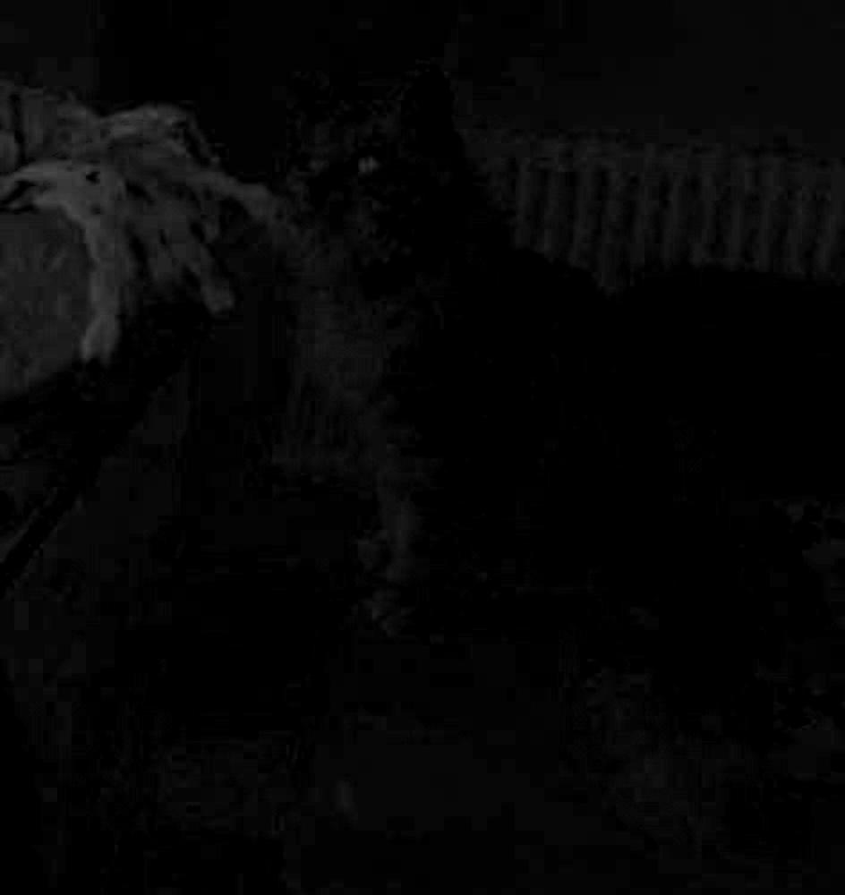

<div class="slide" id="slide-9">
  <div class="slide-header">
    <span class="tag">Preprocessing</span>
    
  </div>
  <div class="slide-body">
    <h2>Color Channels</h2>
    <div class="three-col" style="margin-top:24px;">
      <div class="box">
        <h3>Red Cat</h3>
        <p style="margin-top:8px; line-height:1.6; color:#888;">
          Emphasized Reds
        </p>
        
      </div>
      <div class="box">
        <h3>Blue Cat</h3>
        <p style="margin-top:8px; line-height:1.6; color:#888;">
          Emphasized Blues
        </p>
        
      </div>
      <div class="box">
        <h3>Green Cat</h3>
        <p style="margin-top:8px; line-height:1.6; color:#888;">
          Emphasized Greens
        </p>
        
      </div>
    </div>
    <div class="info-bar" style="margin-top:22px;">
      <span class="hl-amber">Note:</span> Formula for highlighting is 2X - Y - Z
    </div>
  </div>
</div>
